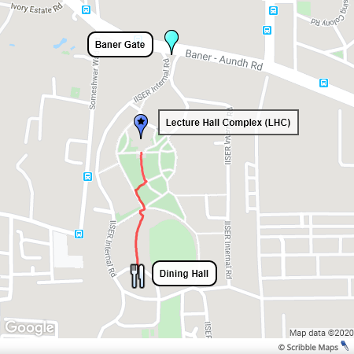

Here, you will find all the information you need to know about FMC 2024
Venue: IISER Pune
Comptition Page: FMC 2024
Date: 1st June 2024
Time: 3:30 pm to 8pm
Address: Indian Institute Of Science Education And Research, Dr Homi Bhabha Rd, Ward No. 8, NCL Colony, Pashan, Pune, Maharashtra 411008 (Directions)
Contact: Pranav Dandgaval
Registration Fees: INR 200
For payment fill the google form and pay on the UPI mentioned in form
Payment Form: Click here
| Time | Event |
|---|---|
| 3:00 - 3:30 pm | Check-in |
| 3:30 - 4:40 pm | FMC Attempt - 1 |
| 4:30 - 5:15 pm | Break |
| 5:15 - 6:15 pm | FMC Attempt - 2 |
| 6:15 - 7:00 pm | Break |
| 7:00 - 8:00 pm | FMC Attempt - 3 |
| Sr No | Participants Name |
|---|
IISER Pune has a Dining Hall which primarily serves its students. It is a 400 metre (~5 minutes) walk from the LHC (Lecture Hall Complex)
There are two food caterers here:
Both have a token-based system. You go to the counter, order your food by looking at the menu, and get your token.
The token is in the form of two paper pieces with the order details. You give one token piece at the food counter and give the other token piece when your food is ready.
There's a readymade lunch menu at both the places. Both Vegetarian and Non-Vegetarian food options are there and have their special lines. These are usually faster and you don't need to wait much.
You can also get Soft Drinks, Packed Fruit Juices, etc.
Feel free to ask anyone around if you are confused. The students around would help you out.
You can order food online from services like Zomato, Swiggy, Uber Eats, etc. directly at the LHC.
Just inform them that the delivery person should come to your location at the LHC. Don't forget to tell them that Helmets are compulsory inside the IISER Campus, or else two-wheelers won't be allowed.
Also, order some time before the Lunch Break starts, so you can get your food and have it comfortably during the break.
Check out the following image for reference:
